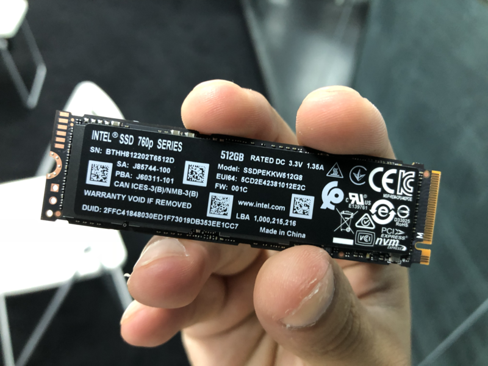
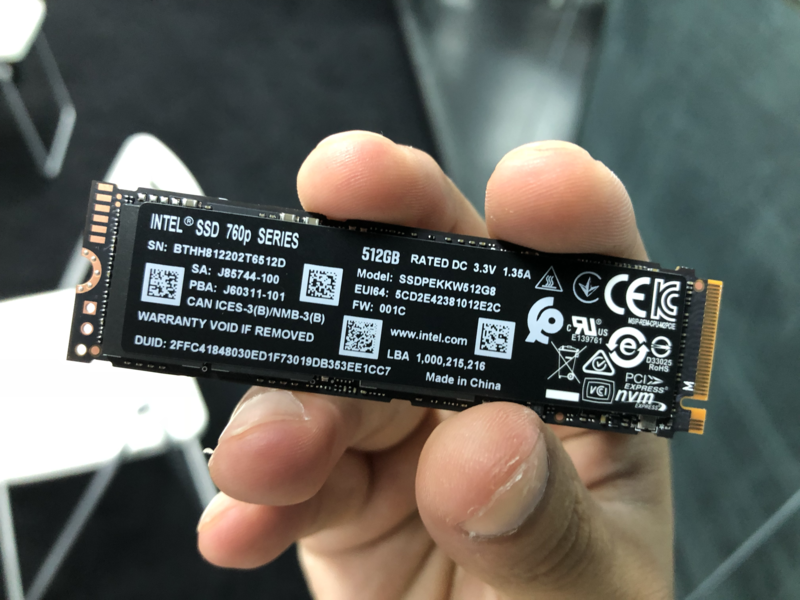
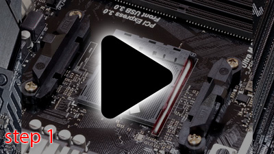
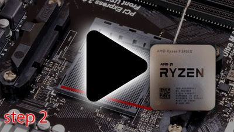
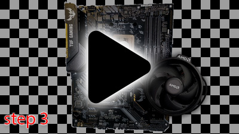
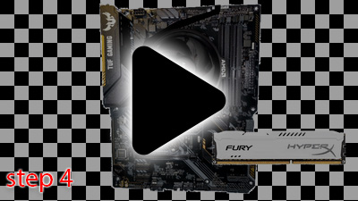
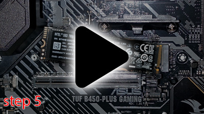
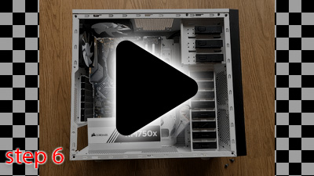
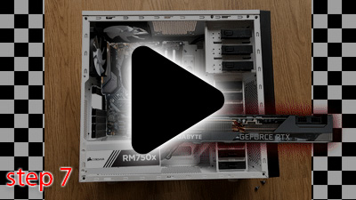

Hvordan Bygge en PC
Har du lyst til å bygge en PC fordi du vil enten spare penger, oppgradere i framtiden eller andre grunner? vel her er en full guide til hvordan bygge en PC fra scratch. Det man trenger for å bygge en PC er:
- Et hovedkort
- En prosessor
- RAM
- Strømforsyning
- Lagring (SSD eller HDD)
- Skjermkort/Grafikk kort
- Et kabinett til delene
Først bør du kanskje vite hva de forskjellige delene gjør.
Eller så kan du bare hoppe til stegene:
Hovedkort
Hovedkortet (eller Motherboard på engelsk) er selve data chipen som kobler samme alle delene i en PC. Dette er hoveddelen i en PC som kommer til å bestemme hvilke andre deler PC'en din kan inneholde. Hovedkortet bestemmer prosessor sokkelen og strømfordelingen til delene. Sokkelen kan fortelle om hvilke prosessorer som er kompatibel med hovedkortet og hvor gammel hovedkortet er. I denne guiden skal vi ta utgangspunktet i en B450 hovedkort med AM4 sokkel. AM4 sokkel betyr at den er kompatibel med AMD sine "Ryzen" prosessorer, og B450 forteller at det er 4. Generasjons B-hovedkort. B-hovedkort er hovedkort som gir relativt god strømfordeling til delene, som betyr at de kan tåle ganske kraftig prosessorer, rask RAM og andre funksjoner som f. Eks billigere hovedkort ikke har. Hovedkort kommer også i hovedsaklig 4 størrelser: ITX, mATX, ATX og EATX. ATX er standarden, mATX = "mini ATX", ITX er enda mindre enn mATX og EATX = "Extended ATX". Disse størrelsene er viktig å huske på når du skal finne et kabinett til PC'en.
Bilde tatt av:
Tita Monto fra Wikimedia CommonsGå tilbake
Prosessor / CPU
En prosessor (eller CPU - Central Processing Unit) er delen som håndterer alle oppgavene som blir gjort på en PC. Prosessoren samarbeider med de andre delene i PC'en for å utføre oppgavene. Det finnes foreløpig bare to prosessor produsenter innenfor DIY PC bygging, og det er AMD og Intel. I denne guiden demonstrerer vi ved bruk av en AMD Ryzen 9 5900x. Vi velger Ryzen fordi som jeg nevnte tidligere i teksten så skal vi bruke et B450 hovedkort. En AMD Ryzen 9 5900x er kompatibel med AM4 sokkelen fordi det er en Ryzen. 9 tallet indikerer hvor mange kjerner den har. Det finnes Ryzen 3, 5 , 7 og 9. 9 betyr da at den har opp til 16 kjerner for øyeblikket. 5900x betyr at det er en 5. Generasjons prosessor i Ryzen serien av prosessorer. Siden den kan ha opp til 16 kjerner betyr det at den har høy strømforbruk, og høyt strømforbruk = mye varme. Dette betyr at den trenger mye aktiv kjøling. Derfor vil jeg heller anbefale å gå med Ryzen 3 - 7 (kommer ann på hva som passer i budsjettet ditt) fordi det følger med en prosessorkjøler med på kjøpet (med smørt kjølepasta som er noe du må putte mellom kjøleren og prosessoren for mest mulig effektivitet) slik at du slipper å gjøre research på hvilke som er kompatibel med hvilke (det er også denne kjøleren jeg kommer til å bruke i denne guiden). Det som er fint med Ryzen serien er at den er kompatibel med eldre Ryzenprosessorer. Så du kan følge denne tutorialen med hvilke som helst Ryzen prosessor og delene vil fortsatt være kompatibel med hverandre.
Bilde tatt av:
Bugwarp_03 fra Wikimedia CommonsGå tilbake
Minne / RAM
RAM - Random Access Memory er "korttids minne" til PC'en. RAM er ansvarlig for hvor mange gigabyte med media eller programmer som er oppe på en og samme gang. RAM kan f. Eks si noe om hvor mange Chrome sider oppe før det påvirker ytelsen til PC'en. RAM er spesielt nyttig om du driver med medie arbeid som foto eller video redigering. Standarden for RAM kapasitet for øyeblikket er 16GB RAM. RAM er universelt med all type hovedkort uavhengig av prosessortype. Det eneste du må være obs på er hvilke generasjon av RAM som er kompatibel med hovedkortet, generasjonene er DDR, DDR1, DDR2, DDR3, DDR4 og DDR5. Den som er aktuell for hovedkortet vi bruker i denne guiden er DDR4. DDR5 er ganske nytt og har foreløpig veldig få hovedkort som har støtte for det, men de kommer nok om et år eller mindre. Jeg anbefaler at du kjøper 2 RAM brikker i steden for 1 fordi da benytter du noe som heter "Dual Channel Memory" som da gjør at prosessoren din leser RAM Brikkene raskere og gjør hele kapasiteten til RAM brikkene lettere tilgjengelig for prosessoren å lese
Bilde tatt av:
Zsinytwiki fra Wikimedia CommonsGå tilbake
Skjermkort / Grafikkort / GPU
GPU - Graphics Processing Unit er delen som er ansvarlig for å "processe" det visuelle. Denne er ansvarlig for at du kan se hva du gjør og er ekstremt viktig del hvis du skal drive med gaming eller 3D modellering. Skjermkort har også sin egen RAM som er mye raskere enn vanlig RAM. Siden det er RAM til Video så blir det ofte kalt for VRAM. Grafikkortet er den delen i PC'en som krever mest strøm og derfor slipper ut mest varme. I dene guiden tar vi utgangspunktet i en RTX 3090 (et av de raskeste Gaming grafikkortene på markedet) fordi den er stor som gjør det enklere å demonstrere. Det finnes prosessorer (som oftes i laptoper eller jobb PC'er) som har innebygd grafikkort i prosessoren, dette kalles en iGPU eller Intergrated GPU og er som oftes mye svakere enn vanlig GPU'er, men har ofte stort fokus på lite strømbruk. iGPU er for små til å kunne ha egen VRAM og vil derfor benytte PC'ens RAM som VRAM.
Gå tilbake
Lagring - HDD, SSD
Lagring på en PC fungerer det samme som på en telefon. Lagringen er som en stor mappe som inneholder
alle filene som du har lagret på PC'en totalt. Det finnes foreløpig 3 typer lagring som er relevant
til denne PC'en
Harddisk / Harddrive / HDD - En harddisk er en fysisk spinnende disk som inneholder all lagringen på
PC'en. Siden det er en spinnende disk (mer lignende en platespiller bare mye raskere) og ikke flash
lagring (som en usb stick) så er harddisker den
billigste form for lagring og kommer i 3,5 tommer og 2,5 tommer beholdere. Harddisker er praktisk
lagring å beholde filer på, men blir slitt fortere og varer ikke like lenge, derfor anbefales det
ikke å laste ned operativsystemet (Windows, Linux etc...) på denne. pga størrelsen til Harddisker og
2,5" SSD'er så er disse kobla til PC'en via kabler. Disse kalles SATA kabler. Det finnes SATA data
og SATA power. SATA Power er en kabel fra strømforsyningen som går til HDD/SSD og gir strøm til dem,
mens SATA data går fra HDD/SSD til hovedkortet og gir PC'en tilgang til lagringen.
Solid State Drive / SSD - SSD'er kommer i 2 former: 2,5 tommer beholdere og som en M.2 SSD. SSD'er
er lagring som funkerer nærmere en USB stick, det er minnebrikker i stedet for en spinnende disk som
fører til lenger holdbarhet, raskere og høyere pris. En 2,5 tommers SSD er den billigste av de to,
de er raskere enn harddisker, men pga bedre holdbarhet så anbefaler jeg å laste operativsystemet på
den raskeste SSD'en du har. M.2 SSD'er er de raskeste og minste SSD'ene som finnes. i motsetning til
både Harddisker og 2,5" SSD'er så kobles ikke M.2 SSD'er via kabel men er skruet og koblet til
direkte i hovedkortet, dette fører til at disse kan bli mer enn 10x så raske som vanlig 2,5" kablet
SSD'er. Disse er høyest anbefalt om det passer inn i budsjettet ditt (det er også denne vi bruker i
denne guiden.
 

Gå tilbake
Strømforsyning / Power Supply / PSU
PSU - Power Supply Unit er delen som gir og fordeler strøm fra en strømkontakt fra veggen og inn til PC delene. Når man skal kjøpe strømforsyning er det viktig å kjøpe en fra en kjent produsent (som Corsair, Cooler Master, MSI, Seasonic) og anbefales sjeldent å kjøpe brukt. Dersom du kjøper brukt eller fra en ikke så troverdig produsent så kan strømforsyningen bli overbelastet som kan føre til at ikke bare den dør, men også alle delene som er kobla til den. Det som er viktig å se på når du skal kjøpe en strømforsyning er hvor mange Watt den har, hvor stor den er (slik at den passer i kabinettet) og hvor effektiv den er. Det finnes sertifiseringer som 80 plus, 80 plus Bronze, 80 plus Silver, 80 plus Gold og 80 Plus Platinum. jeg anbefaler å iallfall ha minst 80 Plus Bronze. Det finnes også modulære, semi-modulære og ikke-modulære strømforsyninger. Modulære betyr at du kan bytte ut kablene, semi modulær betyr at du kan bytte ut noen av kablene og ikke-modulær så følger det med kabler som ikke kan byttes ut. Du trenger ikke å være redd for om det følger med kabler som ikke passer fordi så lenge du kjøper et ITX/mATX/ATX/EATX hovedkort så følger de standard strømforsyningskabler.
bilde tatt av
Ralf Roletschek fra Wikimedia CommonsGå tilbake
Så la meg vise steg etter steg hvordan man bygger en PC!
steg 1 - Åpne "spaken" til sokkelen
Steg 1 er å åpne spaken til sokkelen hvor du skal plassere prosessoren. Dette vil se annerledes ut på en Intel sokkel så derfor vil jeg anbefale å se på en annen guide om du bygger en Intel PC
Trykk her for en guide for å bygge Intel PC'erGå tilbake
Steg 2 - Plasser prosessoren i sokkelen
"Align" Triangelen på sokkelen med triangelen på prosessoren og legg prosessoren forsiktig i sokkelen til den sitter. Dytt veldig forsiktig for å kjenne om den sitter. Om den sitter kan du ta ned "spaken" til sokkelen.
Gå tilbake
Steg 3 - skru på kjøleren til prosessoren
Steg 3 er å skru av de to plastikk delene over og under prosessoren (de har ikke noe ordentlig navn) ved mindre manualen til kjøleren sier noe annet. Etter det kan du legge på prosessorkjøleren (og kjølepasta om den ikke har det) også kobler du til ledningen til kjøleren inn til "pins"-ene som ligger øverst på hovedkortet hvor det står "CPU_FAN". Dette er "pins"-ene til prosessorkjøleren og gjør slik at kjølerens vifte spinner i takt med temperaturen til prosessoren.
Gå tilbake
Steg 4 - Installer RAM brikkene
Steg 4 er å installere RAM, det gjør du ved å først åpne opp de plastikk "spakene" øverst og nederst på RAM kanalene som ligger til høyre for CPU'en (NB noen hovedkort gjør slik at du bare kan åpne den øverste, det betyr ikke at den er defekt, det betyr bare at du kanskje må dytte RAM-brikkene litt hardere enn vanlig). Så må du "aligne" mellomrommet nederst på rambrikkene med det som er markert i rødt i GIF-en på hovedkortet. Du skal høre to klikk på hver side av RAM brikkene, dette er "Spakene" øverst og nederst som låser RAM brikken på plass, om du ikke hører klikk lyden så sjekk om "Spakene" er oppe og prøv og dytt RAM brikkene litt hardere til du hører klikke lyden. Om du har 2 RAM brikker på et hovedkort med kapasitet til 4 RAM brikker så bør du installere på RAM kanal 2 og 4 (1 er nærmest prosessoren og 4 er den lengst fra prosessoren).
Gå tilbake
Steg 5 - Installer M.2 SSD
Steg 5 er å installere M.2 SSD'en, dette er litt som å installere RAM bare sidelengs. Du skrur først inn M.2 Standoff'en som følger med i esken med hovedkortet. Du skrur den på vanligvis det 3 skruhullet fra M.2 kanalen. Så puitter du SSD'en inn i M.2 kanalen på hovedkortet, den vil da få en vinkel på rundt 30 grader pluss minus. Da dytter du den ned med en finger og skrur den inn i standoff'en.
bildet av SSD uten skrue tatt av:
Smial fra Wikimedia CommonsGå tilbake
Steg 6 - Sett alt inn i kabinettet
Steg 6 er å sette inn hovedkortet og skru det inn i kabinettet, det samme gjelder Strømforsyningen. Hvilke skruer som går hvor står i bruksanvisningen til Kabinettet. Så kobler du til kablene der de passer.
Gå tilbake
Step 7 - Sett inn skjermkortet
Step 7, altså til slutt skrur du ut de to metall platene til venstre for hovedkortet og putter skjermkortet inn i slotten/kanalen som den passer i, så skrur du den der hvor de metall platene var, koble til strøm (i først skjermkortet også PC'en) også skrur du den på og sjekker om den kommer seg inn i BIOS'en (Basic Input Output System) bare for å se at PC'en funker. Så kan du tilslutt laste ned hvilket enn operativsystem du ønsker ved å laste det ned på en usb stick og kobler USB sticken til PC'en og skrur PC'en på.
Kabinettet brukt i GIF'ene er tatt av
FASTILY fra Wikimedia CommonsGå tilbake
Ekstra informasjon
Alle bildene brukt går under Creative Commons lisensen som er at jeg kan bruke de så lenge jeg krediterer skaperen av verket (i dette tilfelle bildet/fotografet). Bildene hvor jeg ikke har kreditert skaperen er bilder jeg har tatt selv, som F. Eks det øverste bilde er et bilde av min egen PC.